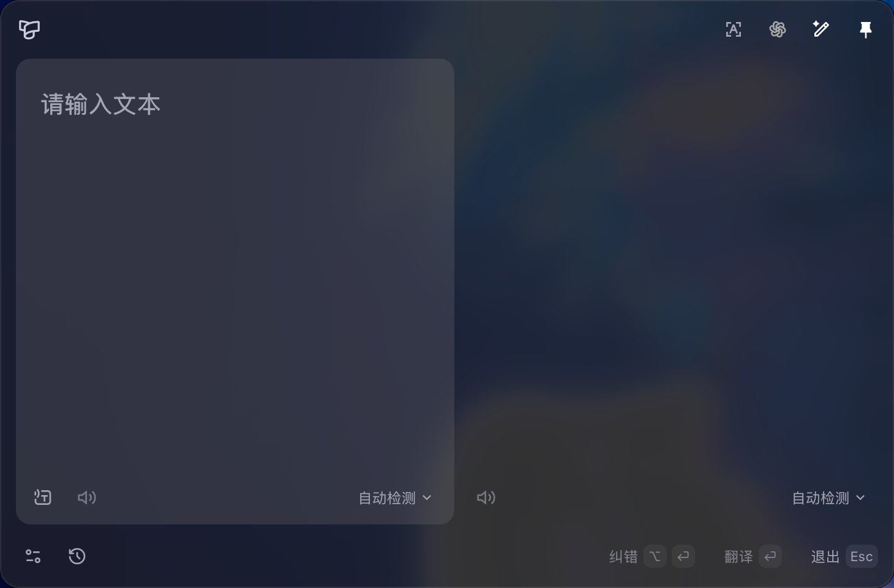

LUNA · MATERIAL STUDY 01
先看材质，再决定下一步
以你提供的窗口为参考，只检查磨砂半透、背景色扩散、内部层次与边缘。该风格已确认为首版视觉基准。
风格已确认
打开可操作案例


0% 仅参考图；100% 仅案例稿。中间位置用于检查轮廓、明暗与色块差异。
参考图案例稿 · 50%
左右移动分界线，检查相同位置的材质。左侧为参考图，右侧为案例稿。
参考图案例稿
这次看四处
01
外壳的透光
背景的蓝色、亮部和暗部，是否柔和地进入整个窗体。
02
背景的扩散
人物细节被模糊，而明暗与色块仍保留；不是一块纯色蒙层。
03
内部的厚度
输入面板比外壳更厚，右侧更轻，仍属于同一套材质。
04
边缘的悬浮感
细边框、内缘高光与外部阴影是否自然，文字是否清晰。